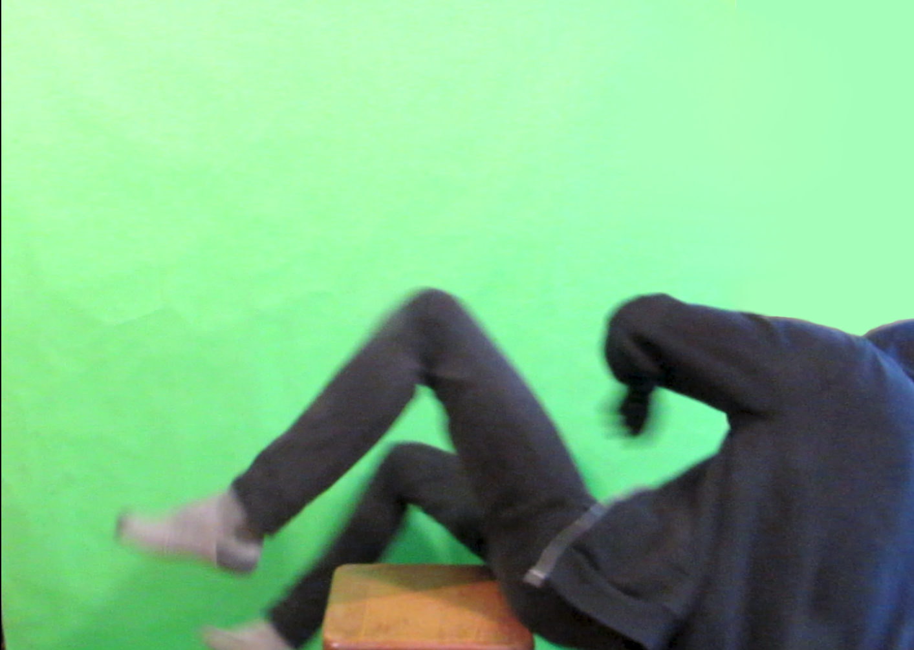

Hello there! My name is Paweł. I'm an 17-year-old creator from Poland.
I've been coding for the past 2 years.
I try not to limit myself to just one idea/technology. I've created stuff ranging from computer graphics
through music, videos, art, finishing on computer programs.
My goal is to be constantly doing something throughout my life. That way I always can look back at the stuff I've made and
have a moment of being proud of seeing the progress.
My adventure with programming started when my father taught me the basics of c++ and algorithms.
Before programming, I was really into Blender, Video editing, and music creation.
Now I try not to slow down in development but apart from creating my stuff I'm trying to learn history (Mainly XX century) and
languages (French and Russian) to be able to create things more efficiently and with better quality and maybe even with the help of others.